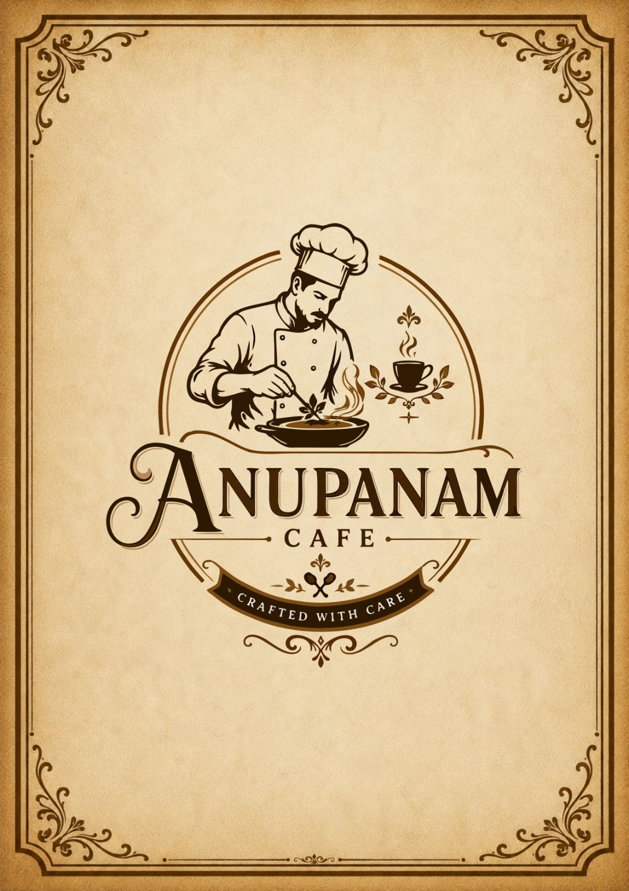

ANUPANAM FOODS is a vegetarian restaurant in Madurai offering fresh and delicious South Indian food in a comfortable dining environment. We serve quality food for families, friends, and food lovers, with dine-in, takeaway, and online food ordering options.
ANUPANAM FOODS serves authentic South Indian food prepared with fresh ingredients and traditional flavours. Our menu includes delicious vegetarian dishes, dosas, meals, juices, and beverages, making us a convenient choice for a tasty South Indian meal in Madurai.
We focus on serving fresh vegetarian food with authentic South Indian flavours. ANUPANAM FOODS offers a comfortable dining experience, convenient takeaway, and online food ordering for customers in Madurai.
